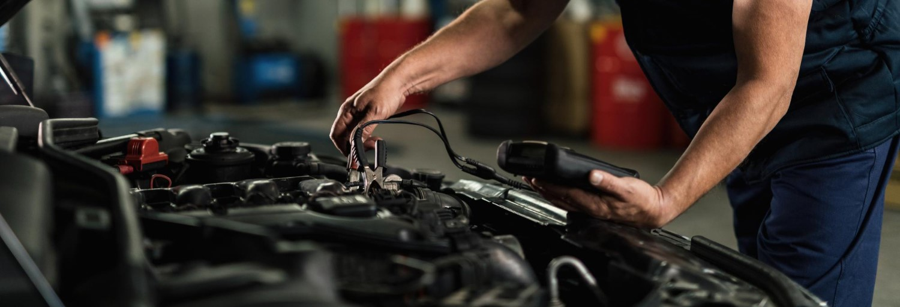
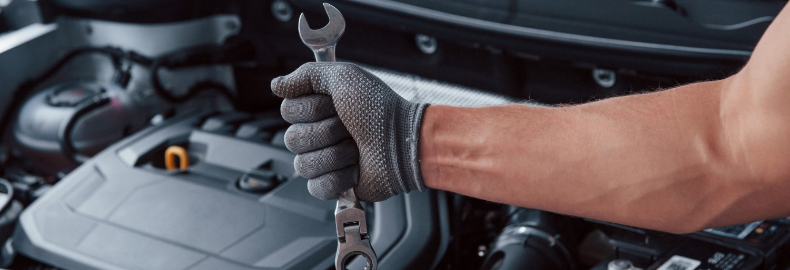
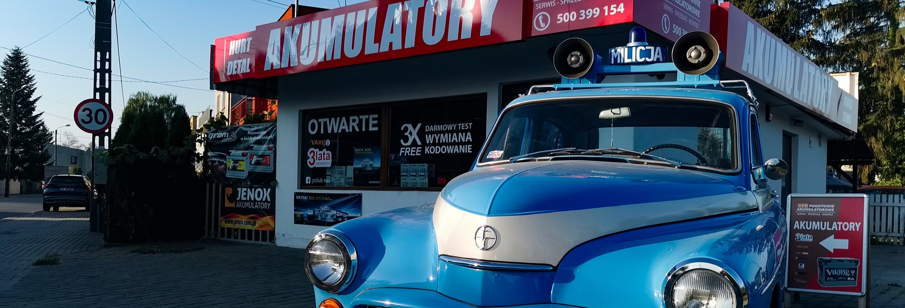

Oferujemy NAJWIĘKSZY wybór akumulatorów w Tarnowie: sprawdzone marki w najniższych cenach
Dysponujemy profesjonalnym sprzętem do testów i kodowania akumulatorów

Pogotowie Akumulatorowe
Zapraszamy do zapoznania się z naszym szerokim wyborem akumulatorów.
O Nas
Dowiedz się więcej o naszej firmie
Sprawdź To!Zapraszamy do zapoznania się z naszym szerokim wyborem akumulatorów.
Sprawdź Sam!Oferujemy szeroki wachlarz usług.
Przy odbiorze akumulatora w sklepie stacjonarnym montaż i kodowanie gratis
Zobacz Sam!

Oferujemy NAJWIĘKSZY wybór akumulatorów w Tarnowie: sprawdzone marki w najniższych cenach
Dysponujemy profesjonalnym sprzętem do testów i kodowania akumulatorów
Zatrudniamy wyłącznie profesjonalistów w dziedzinie akumulatorów i mechaniki samochodowej
Oferujemy niezawodność i kompetencje potwierdzone certyfikatem Banner
Wieloletnie doświadczenie i zadowolenie tysięcy klientów
Na naszym blogu znajdziesz wiele ciekawych artykułów.
Poczytaj!Bardzo polecam Pogotowie Akumulatorowe! Przyjechałam sprawdzić napięcie w akumulatorze i spotkałam się z pełnym profesjonalizmem oraz przede wszystkim uczciwym podejściem do klienta. Pan dokładnie sprawdził akumulator i zamiast namawiać mnie na zakup nowego, poinformował, że wystarczy go odpowiednio doładować. Co więcej, sama usługa sprawdzenia została wykonana całkowicie bezpłatnie. Bardzo doceniam takie podejście — bez naciągania na niepotrzebne koszty, za to z konkretną i fachową poradą. W dzisiejszych czasach taka uczciwość naprawdę zasługuje na uznanie. Zdecydowanie będę polecać to miejsce innym i w razie potrzeby na pewno wrócę!Opinia z Google
Szybko i fachowo. Pełen profesjonalizm. Bardzo dobra obsługa, pomimo, że było już po godzinach otwarcia. Samochód został "odpalony" pod sklepem. Pełne doradztwo w sprawie zakupu. Bez naciagania. Rzetelne podejście i odrazu widać zaangażowanie a tak jest tylko wtedy kiedy praca jest pasją. Polecam na 100%Opinia z Google
Gdyby się dało dałabym sześć gwiazdek! Serdecznie polecam Pogotowie Akumulatorowe. Szybki dojazd na miejsce, pomoc we wskrzeszeniu samochodu oraz wymiana na nowiutki akumulator w bardzo przystępnej cenie. Polecam z całego serca!Opinia z Google
Szybka, sprawna, bezproblemowa obsługa. Można dzwonić i każdej porze, świątek, piątek profesjonalnie załatwią sprawę. ❤Opinia z Google
Przyjechali w 20min do rozładowanego akumulatora. Sprawdzili, naładowali. Akumulator był do wymiany. Wymiana w ich oddziale zajęła kolejne 10min. Szybko i sprawnie. PolecamOpinia z Google
Bardzo polecam Pogotowie Akumulatorowe! Przyjechałam sprawdzić napięcie w akumulatorze i spotkałam się z pełnym profesjonalizmem oraz przede wszystkim uczciwym podejściem do klienta. Pan dokładnie sprawdził akumulator i zamiast namawiać mnie na zakup nowego, poinformował, że wystarczy go odpowiednio doładować. Co więcej, sama usługa sprawdzenia została wykonana całkowicie bezpłatnie. Bardzo doceniam takie podejście — bez naciągania na niepotrzebne koszty, za to z konkretną i fachową poradą. W dzisiejszych czasach taka uczciwość naprawdę zasługuje na uznanie. Zdecydowanie będę polecać to miejsce innym i w razie potrzeby na pewno wrócę!Opinia z Google
Szybko i fachowo. Pełen profesjonalizm. Bardzo dobra obsługa, pomimo, że było już po godzinach otwarcia. Samochód został "odpalony" pod sklepem. Pełne doradztwo w sprawie zakupu. Bez naciagania. Rzetelne podejście i odrazu widać zaangażowanie a tak jest tylko wtedy kiedy praca jest pasją. Polecam na 100%Opinia z Google
Gdyby się dało dałabym sześć gwiazdek! Serdecznie polecam Pogotowie Akumulatorowe. Szybki dojazd na miejsce, pomoc we wskrzeszeniu samochodu oraz wymiana na nowiutki akumulator w bardzo przystępnej cenie. Polecam z całego serca!Opinia z Google
Szybka, sprawna, bezproblemowa obsługa. Można dzwonić i każdej porze, świątek, piątek profesjonalnie załatwią sprawę. ❤Opinia z Google
Przyjechali w 20min do rozładowanego akumulatora. Sprawdzili, naładowali. Akumulator był do wymiany. Wymiana w ich oddziale zajęła kolejne 10min. Szybko i sprawnie. PolecamOpinia z Google
Wybrane opinie z Google. Stan na 27.10.2026.
Nie wyrzucaj starego akumulatora!
Przekaż go sprzedawcy kupując nowy.